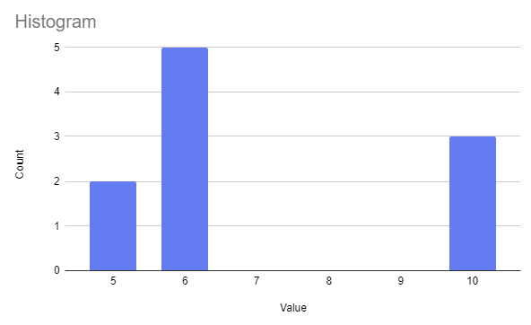
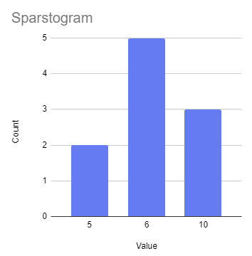
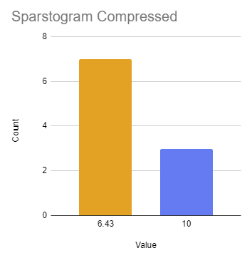

Sparse, adaptive, scalable histogram in TypeScript. On GitHub.
This Typescript library provides a sophisticated data structure for efficiently characterizing datasets through histograms.
Sparstogram is a histogram that maintains a complete or sparse approximation of the data frequency. The representation will be complete if the number of distinct values is less than or equal to the maxCentroids. Otherwise, the values will be compressed to a smaller number of centroids in a way that minimizes the loss. The histogram can also maintain a set of quantiles, which are maintained with each new value (e.g. median can be efficiently maintained). The structure is adaptive in range and resolution, and can be used for streaming or large data digests.
The implementation uses B+Trees to efficiently maintain the centroids and losses, which is a self-balancing structure; so this should be able to scale efficiently. As the number of unique data values grows beyond the configured maxCentroids, the loss returned from the add method will begin to be non-zero and represents how well the data in question compresses. If and when this loss grows over some threshold, the user can choose to increase the maxCentroids value to maintain higher accuracy. On the other hand, maxCentroids can by dynamically shrunk to reduce memory, at the expense of more approximation.
maxCentroidsmaxCentroids can be dynamically adjusted up or downHistograms are often used in visualizing the frequency of occurrences, but many programmers don't know how useful histograms are as an analytical data structure. Histograms are a powerful statistical tool that offer a frequency representation of the distribution of a dataset, which is useful across a variety of disciplines. There are many practical reasons for perceiving the distribution, outliers, skewness, range, magnitude, and central tendency of data. Just about any circumstance where there is signal with noise, histograms are invaluable for deciphering each, by establishing a cut-off quantile, or computing k-Means.
In image processing, histograms are crucial for scaling pixel values. By examining the histogram of an image's pixel intensities, you can accurately adjust the contrast and brightness, enhancing the image quality by stretching or compressing the range of pixel values to utilize the full spectrum more effectively.
In performance optimization, system monitoring, and distributed systems, histograms play a vital role in determining timing thresholds. By generating a histogram of response times or execution times of a system, you can identify common performance bottlenecks and outliers. This enables you to set appropriate thresholds for alerts or to optimize system performance by focusing on the most impactful areas. For instance, understanding the distribution of database query times can help in optimizing indexes or rewriting queries to reduce the tail latencies that affect user experience.
Sparstogram is inspired by the paper "Approximate Frequency Counts over Data Streams" by Gurmeet Singh Manku and Rajeev Motwani. Though similar in spirit, this implementation is quite different:
In a typical representation of a histogram, values are evenly spaced. Really, each value represents a range of values that are grouped. For instance, if the values are 4ms, 5ms, and 6ms; in reality each bucket represents an interval (3.4ms-4.5ms, 4.5ms-5.5ms, ...).
In computers, histograms are typically represented with an array, where every element represents the count in that range (or "entry"). There are a few noteworthy suppositions:

In a Sparstogram, no entries are stored until they are added, and no range is maintained between entries (AKA centroids) holding unused space. The same histogram information as above is represented in a Sparstogram as only the three ordered entries having counts:

Unlike the traditional representation, the Sparstogram dynamically adapts itself in entries, resolution and range. A limit can be imposed on a Sparstogram through maxCentroids. Once that number of unique values has been reached, additional entries will results in compression so as not to exceed that many entries. Compression involves merging two adjacent entries into one, with a new mean, combined count, and a computed variance. The pair to merge are chosen based on least loss, which information is maintained in an internal index so as not to require searching for. Here is an illustration of the same Sparstogram, were we to set maxCentroids to 2, thus asking it to shrink to only 2 entries:

Note that no mean information is lost in the compression, only distribution information. To reduce the amount of distribution information lost, a variance is computed to capture the notion that the entry has "spread" and is no longer a point. The countAt, meanAt, and the other accessor methods will attempt to interpolate based on that variance, based on a normal distribution. As a result, though the true distribution is lost in the compression, the general effect of there being multiple entries is preserved.
Create an instance with a maxCentroids budget, and feed is some information. Time spent per User Interface, financial data, pixel brightnesses, audio samples, whatever. The result will the the frequency of each value, which you can use to make judgements from. You can maintain the median over a streaming dataset, for instance, or compute the 75th percentile of something to discover outliers or eliminate noise.
To install the Sparstogram library, use the following command:
npm install sparstogram
Or, if you prefer using pnpm:
pnpm add sparstogram
import { Sparstogram } from "sparstogram";
// Initialize a Sparstogram with a maximum of 100 centroids and a quantile marker for maintaining the median
const histogram = new Sparstogram(100, [0.5]);
// Add a series of values to the histogram
histogram.add(5.0);
histogram.add(2.5);
const loss = histogram.add(3.7);
// Dynamically adjust maxCentroids based on the application's precision requirements
if (loss > 3.5) {
histogram.maxCentroids = 150;
}
// Retrieve the median value
const median = histogram.atQuantile(0.5).centroid.value;
// Or the same using the marker
const fastMedian = histogram.atMarker(0).centroid.value;
// Get the total count of values in the histogram
const totalCount = histogram.count;
// Find the rank of a specific value
const rank = histogram.atValue(3.7);
// Find the value at the given rank
const value = histogram.atRank(2);
// Iterate all centroids
for (const entry of histogram.ascending()) {
console.log(entry);
}
// Iterate from the median backwards
for (const entry of histogram.descending({ markerIndex: 0 })) {
console.log(entry);
}
// Iterate from a value forwards
for (const entry of histogram.ascending({ value: 2.5 })) {
console.log(entry);
}
// Find the local maxima with 5 item window smoothing for a simple analysis of the data distribution
const peaks = histogram.getPeaks(3);
Contributions to the Digitree Sparstogram library are welcome! Here's how you can contribute:
.editorconfigyarn build or npm run buildyarn test or npm testThis project is licensed under the MIT License - see the LICENSE file for details.